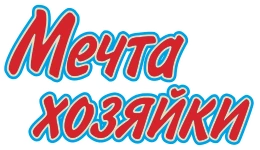
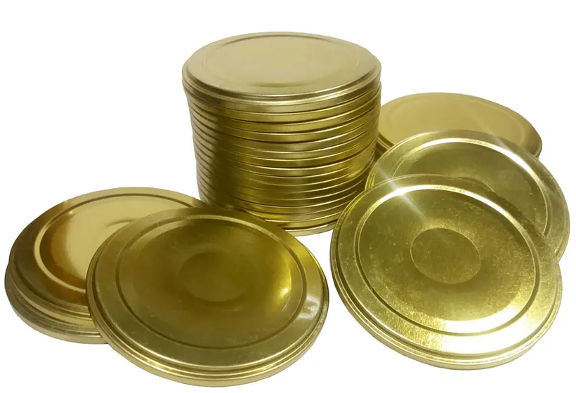
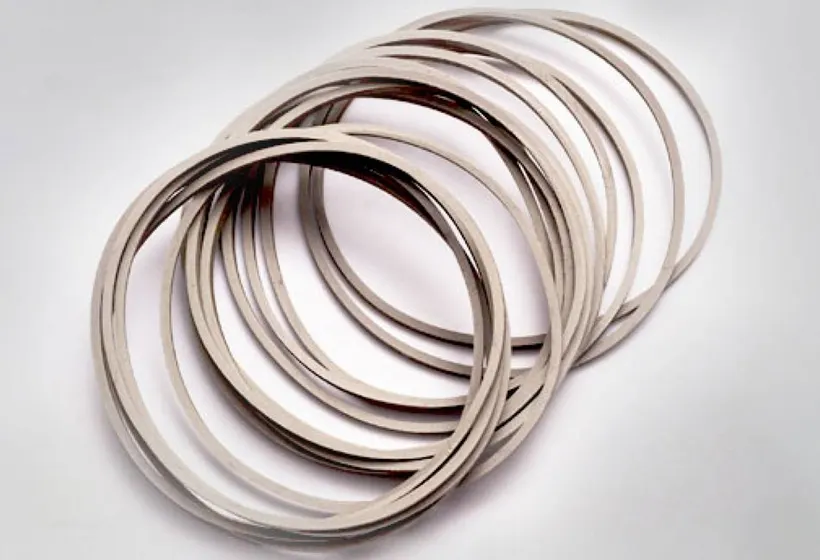
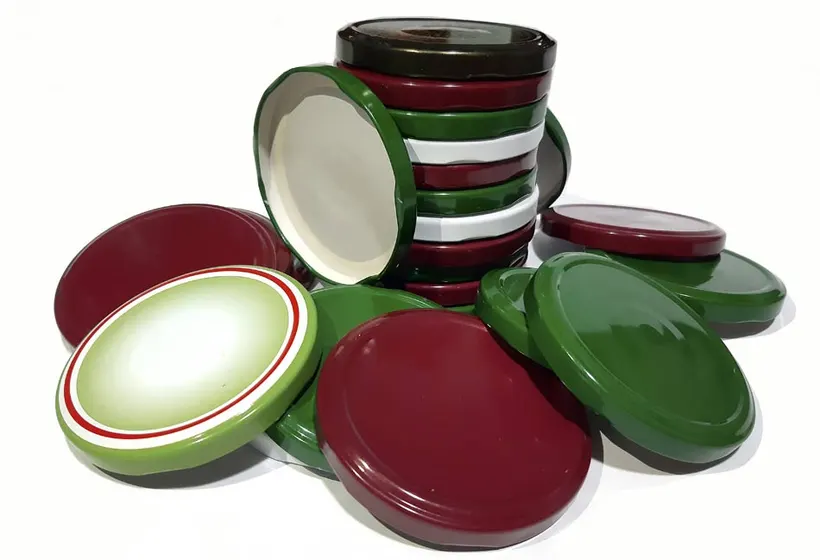
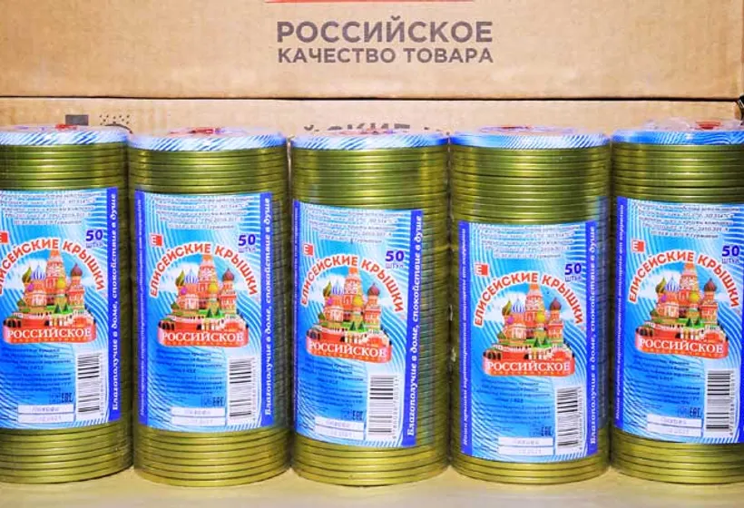
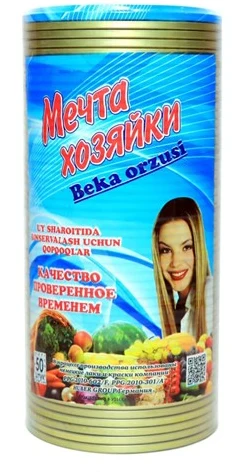
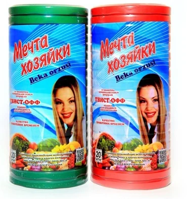
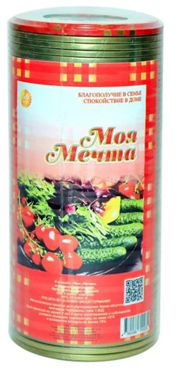
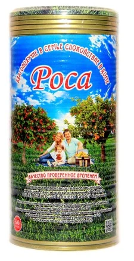
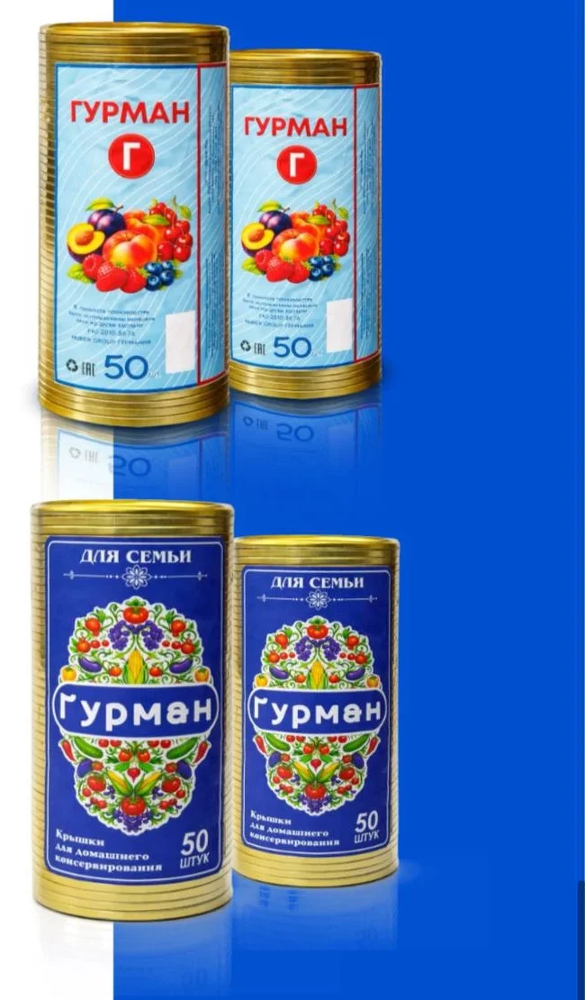

Характеристики
- Банки
- с венчиком СКО I‑82
- Жесть
- ЭЖК 0,16–0,20 мм
- Снаружи
- золотистый лак или литография
- Внутри
- пищевая эмаль
- Уплотнение
- резинка из пищевого каучука
- Конструкция
- ребро жёсткости
- Упаковка
- туба 50 шт

ELIT KONSERVA Запросить прайсО заводе
Услуги: лакировка и литография жести
Листы от 710×510 до 1145×950 мм, толщина 0,15–0,40 мм.
Лаки PPG выдерживают стерилизацию выше 100 °C. Двухслойное покрытие — по запросу.
Офсетная печать на металле, краски HUBER GROUP. Дизайн — по вашему заданию.
Крышки СКО и твист‑офф, детали комбинированных банок и туб.
Каждую партию проверяем: масса покрытия, твёрдость, адгезия.
О заводе
1996

Завод основан в Коканде.
2014

Своё производство викельных колец.
2016

Линия твист‑офф.Отдельный цех и новые склады.
2022

Новая линия СКО «Елисейские крышки».
Бренды
50 шткрышек СКО в тубе
20 шткрышек твист‑офф в тубе





География
Завод — в Коканде, Ферганская область. Отправляем образцы.
Цена по запросу
Назовите тип крышки и объём партии — от 1 000 до 10 000 000 штук.
+998 97 590‑88‑22